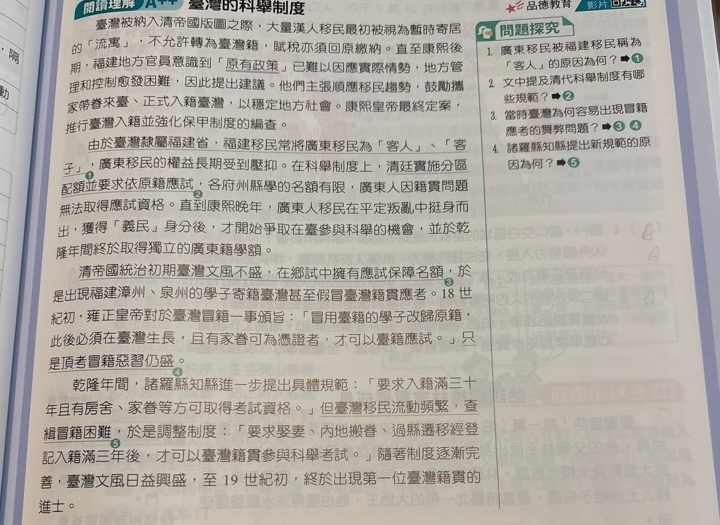
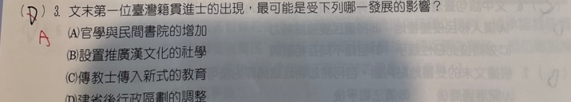

分享原卷｜p37-q03
完整原題
作答所需文章／材料
臺灣被納入清帝國版圖之際，大量漢人移民最初被視為暫時寄居的「流寓」，不允許轉為臺灣籍，賦稅亦須回原籍繳納。直至康熙後期，福建地方官員意識到「原有政策」已難以因應實際情勢，地方管理和控制愈發困難，因此提出建議。他們主張順應移民趨勢，鼓勵攜家帶眷來臺、正式入籍臺灣，以穩定地方社會。康熙皇帝最終定案，准行臺灣入籍並強化保甲制度的編查。 由於臺灣隸屬福建省，福建移民常將廣東移民視為「客人」、「客子」。廣東移民的權益長期受到壓抑。在科舉制度上，清廷實施分區配額並要求依原籍應試，各府州縣學的名額有限，廣東人因籍貫問題無法取得應試資格。直到康熙晚年，廣東人移民在平定叛亂中挺身而出，獲得「義民」身分後，才開始爭取在臺參與科舉的機會，並於乾隆年間終於取得獨立的廣東籍學額。 清帝國統治初期臺灣文風不盛，在鄉試中擁有應試保障名額，於是出現福建漳州、泉州的學子寄籍臺灣甚至假冒臺灣籍貫應考。18世紀初，雍正皇帝對於臺灣冒籍一事頒旨：「冒用臺籍的學子改歸原籍，此後必須在臺灣生長，且有家眷可為憑證者，才可以臺籍應試。」只是頂考冒籍惡習仍盛。 乾隆年間，諸羅縣知縣進一步提出具體規範：「要求入籍滿三十年且有房舍、家眷等方可取得考試資格。」但臺灣移民流動頻繁，查緝冒籍困難，於是調整制度：「要求娶妻、內地搬眷、過縣遷移經登記入籍滿三年後，才可以臺灣籍貫參與科舉考試。」隨著制度逐漸完善，臺灣文風日益興盛，至19世紀初，終於出現第一位臺灣籍貫的進士。文末第一位臺灣籍貫進士的出現，最可能是受下列哪一發展的影響？
(A) 官學與民間書院的增加
(B) 設置推廣漢文化的社學
(C) 傳教士傳入新式的教育
(D) 建省後行政區劃的調整
先想一想，再查看答案、解說與原圖
原卷作答：D，原卷紅筆訂正A
正確答案：A。官學與民間書院增加，有助培育應試人才、推動文風，最能連結19世紀初進士的出現。
逐項解析
| 選項與原句 | 判讀 | 句意與判斷理由 |
|---|---|---|
| (A) 官學與民間書院的增加 | 應選 | 官學與民間書院增加，有助培育應試人才、推動文風，最能連結19世紀初進士的出現。 |
| (B) 設置推廣漢文化的社學 | 不選 | 社學也有推廣教育功能，但本文所問科舉人才與文風發展，以官學及書院增加最直接。 |
| (C) 傳教士傳入新式的教育 | 不選 | 西方傳教士的新式教育不是本文清代科舉培育進士的主要脈絡。 |
| (D) 建省後行政區劃的調整 | 不選 | 臺灣建省屬19世紀後期，不能倒過來造成19世紀初已出現的進士。 |
詳細說明與解題步驟
先比較年代，再看人才培養：文末說19世紀初，建省卻在更晚的19世紀後期，D有先後倒置問題。科舉人才的出現，應連到官學、書院及文教發展，故選A。
【A】官學與民間書院增加，有助培育應試人才、推動文風，最能連結19世紀初進士的出現。
【B】社學也有推廣教育功能，但本文所問科舉人才與文風發展，以官學及書院增加最直接。
【C】西方傳教士的新式教育不是本文清代科舉培育進士的主要脈絡。
【D】臺灣建省屬19世紀後期，不能倒過來造成19世紀初已出現的進士。
核對註記：已實看原卷，核對完整題幹、全部選項與必要材料；康軒課次缺獨立章節證據，歸綜合，不採來源AI三版本頁碼。
原圖（僅本題）

